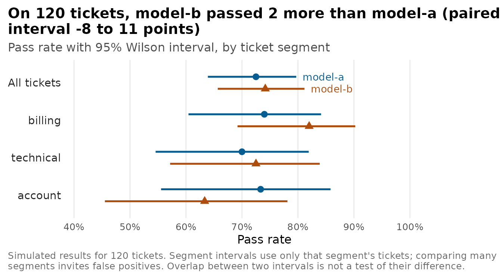

Analyze evaluation results with uncertainty
Source:vignettes/evaluation-analysis.Rmd
evaluation-analysis.RmdAn evaluation run reports a pass rate, and a pass rate computed from a hundred test cases carries sampling error. Two prompts that score 71% and 78% on the same test set may or may not differ in a way that holds up on new inputs. This article works through four checks that help separate a real difference from sampling noise and grader error: intervals for pass rates, a paired comparison of two targets on the same cases, a sample-size calculation, and a test of the LLM judge against human labels.
The examples use simulated results shaped like the output of
foundry_evaluate(), so the article runs without
credentials. Every number on this page comes from the simulation in the
next section, with a fixed seed, so the true pass rates are known. No
model or judge was called. vignette("evaluations") shows
how to produce real results.
Simulated results
The simulation scores 120 support tickets in three segments with two
targets, model-a and model-b, and one grader.
Some tickets are harder than others for both targets, which is what
makes the two results for the same ticket correlated. By construction,
model-b is stronger overall and more so on technical
tickets. Because the simulation knows each ticket’s pass probability, it
also gives the expected pass rates that the observed results
estimate.
set.seed(20260927)
n_cases <- 120
tickets <- tibble(
case_id = seq_len(n_cases),
segment = rep(c("billing", "technical", "account"), times = c(50, 40, 30)),
difficulty = rnorm(n_cases)
)
simulate_run <- function(tickets, skill, technical_bonus = 0) {
shift <- c(billing = 0.6, technical = -0.5, account = 0.2)[tickets$segment]
bonus <- ifelse(tickets$segment == "technical", technical_bonus, 0)
p_pass <- plogis(skill - 1.2 * tickets$difficulty + shift + bonus)
tickets |>
mutate(.grader = "label-match", .passed = runif(n()) < p_pass, p_true = p_pass) |>
select(-difficulty)
}
simulated <- bind_rows(
"model-a" = simulate_run(tickets, skill = 1.0),
"model-b" = simulate_run(tickets, skill = 1.3, technical_bonus = 0.5),
.id = "target"
)
expected <- simulated |>
group_by(target, segment) |>
summarise(expected_pass_rate = mean(p_true), .groups = "drop")
results <- select(simulated, -p_true)
results
#> # A tibble: 240 × 5
#> target case_id segment .grader .passed
#> <chr> <int> <chr> <chr> <lgl>
#> 1 model-a 1 billing label-match TRUE
#> 2 model-a 2 billing label-match TRUE
#> 3 model-a 3 billing label-match TRUE
#> 4 model-a 4 billing label-match FALSE
#> 5 model-a 5 billing label-match TRUE
#> 6 model-a 6 billing label-match TRUE
#> 7 model-a 7 billing label-match TRUE
#> 8 model-a 8 billing label-match TRUE
#> 9 model-a 9 billing label-match FALSE
#> 10 model-a 10 billing label-match TRUE
#> # ℹ 230 more rowsWith real runs, results_a and results_b
would come from two foundry_evaluate() calls on the same
data frame, and
bind_rows("model-a" = results_a, "model-b" = results_b, .id = "target")
would stack them the same way. foundry_evaluate() returns
one row per case and grader. Filter to one grader, or define a per-case
outcome such as “passed every grader”, before pairing. Count missing
.passed values and decide whether to exclude them or count
them as failures; dropping difficult timeouts can bias pass rates
upward.
Pass rates with intervals
The Wilson score interval stays inside 0 and 1 and keeps close to its nominal coverage at most pass rates, while the textbook normal interval can fail near 0 and 1.
wilson_interval <- function(passed, n, level = 0.95) {
z <- qnorm(1 - (1 - level) / 2)
p <- passed / n
center <- (p + z^2 / (2 * n)) / (1 + z^2 / n)
half <- z * sqrt(p * (1 - p) / n + z^2 / (4 * n^2)) / (1 + z^2 / n)
tibble(lower = center - half, upper = center + half)
}
pass_rates <- results |>
group_by(target) |>
summarise(passed = sum(.passed), cases = n(), .groups = "drop") |>
mutate(pass_rate = passed / cases, wilson_interval(passed, cases))
pass_rates
#> # A tibble: 2 × 6
#> target passed cases pass_rate lower upper
#> <chr> <int> <int> <dbl> <dbl> <dbl>
#> 1 model-a 87 120 0.725 0.639 0.797
#> 2 model-b 89 120 0.742 0.657 0.812With 120 cases, each interval reaches about 8 percentage points either side of its estimate, a little less above and more below. A difference between two pass rates is less certain than either rate: for two independent runs of this size, its interval is about 11 points either side. Checking whether two intervals overlap is not a test of the difference, because intervals can overlap when a real difference exists. Compare targets with the paired analysis below.
Compare the targets case by case
Both targets answered the same tickets, so compare them ticket by ticket. Tickets where both passed, or both failed, say nothing about which target is better. Only the discordant tickets do.
paired <- inner_join(
results |> filter(target == "model-a") |> select(case_id, segment, a = .passed),
results |> filter(target == "model-b") |> select(case_id, b = .passed),
by = "case_id"
)
count(paired, a, b)
#> # A tibble: 4 × 3
#> a b n
#> <lgl> <lgl> <int>
#> 1 FALSE FALSE 15
#> 2 FALSE TRUE 18
#> 3 TRUE FALSE 16
#> 4 TRUE TRUE 71
only_b <- sum(!paired$a & paired$b)
only_a <- sum(paired$a & !paired$b)
mcnemar <- binom.test(only_b, only_b + only_a)
mcnemar$p.value
#> [1] 0.8641662model-b passed 89 tickets and model-a
passed 87. Of the 34 discordant tickets, model-b passed 18
that model-a failed, and model-a passed 16
that model-b failed. McNemar’s exact test on those tickets
gives p = 0.86. That p-value means the data are compatible with no
difference; it is not evidence that the targets are equal. The exact
test is conservative, so a mid-p McNemar test can be useful as a
sensitivity check.
A bootstrap that resamples tickets, not rows, gives an interval for the difference in pass rates. Resample at the level where the test cases were drawn. If one conversation contributes several items, resample conversations. If a target answers each case several times, average within the case first, then resample cases.
difference <- mean(paired$b) - mean(paired$a)
bootstrap <- replicate(2000, {
rows <- sample.int(nrow(paired), replace = TRUE)
mean(paired$b[rows]) - mean(paired$a[rows])
})
paired_ci <- quantile(bootstrap, c(0.025, 0.975), names = FALSE)
unpaired_ci <- prop.test(
c(sum(paired$b), sum(paired$a)),
c(nrow(paired), nrow(paired)),
correct = FALSE
)$conf.int
paired_wald_ci <- difference + c(-1, 1) * qnorm(0.975) *
sqrt((only_a + only_b - (only_b - only_a)^2 / nrow(paired)) / nrow(paired)^2)
tibble(
method = c(
"paired bootstrap over tickets",
"paired Wald interval",
"unpaired two-sample interval"
),
difference = difference,
lower = c(paired_ci[[1]], paired_wald_ci[[1]], unpaired_ci[[1]]),
upper = c(paired_ci[[2]], paired_wald_ci[[2]], unpaired_ci[[2]])
)
#> # A tibble: 3 × 4
#> method difference lower upper
#> <chr> <dbl> <dbl> <dbl>
#> 1 paired bootstrap over tickets 0.0167 -0.0833 0.108
#> 2 paired Wald interval 0.0167 -0.0785 0.112
#> 3 unpaired two-sample interval 0.0167 -0.0952 0.129The two results for a ticket are correlated (r = 0.28), so the paired
interval is narrower than the same-method unpaired interval, which
treats the runs as independent samples. The observed difference of 2
points has a paired bootstrap 95% interval from -8 to 11 points, which
includes zero. The simulation’s expected pass rates differ by 7 points,
so model-b really is better here. A test set of 120 tickets
is too small to show it reliably; at this size, a 5% test would detect a
difference of this size only about a quarter to a third of the time.
The quantity being estimated is the difference in pass rate between these two targets on tickets like these, with these prompts, sampling settings, and grader. When the grader is a model, report the judge deployment and version too. It says little about inputs unlike the test set, and a test set you have tuned prompts against will overstate how well the winning prompt generalizes. Keep a held-out set for the final comparison.
Where the targets fail
Segment pass rates show where to look next, but each segment has fewer cases, so its interval is wider. Scanning many segments for the largest gap also finds gaps that are only noise.
by_segment <- results |>
group_by(target, segment) |>
summarise(passed = sum(.passed), cases = n(), .groups = "drop") |>
mutate(pass_rate = passed / cases, wilson_interval(passed, cases))
by_segment
#> # A tibble: 6 × 7
#> target segment passed cases pass_rate lower upper
#> <chr> <chr> <int> <int> <dbl> <dbl> <dbl>
#> 1 model-a account 22 30 0.733 0.556 0.858
#> 2 model-a billing 37 50 0.74 0.604 0.841
#> 3 model-a technical 28 40 0.7 0.546 0.819
#> 4 model-b account 19 30 0.633 0.455 0.781
#> 5 model-b billing 41 50 0.82 0.692 0.902
#> 6 model-b technical 29 40 0.725 0.572 0.839The account segment shows how easily that happens. By construction
model-b is better on account tickets, by 5 points in
expectation, yet this sample shows it 10 points lower.

How many test cases a comparison needs
The normal-approximation interval half-width for a single pass rate shrinks with the square root of the number of cases. Near a pass rate of 80%:
margin_of_error <- function(p, n) qnorm(0.975) * sqrt(p * (1 - p) / n)
tibble(cases = c(25, 50, 100, 200, 400, 800)) |>
mutate(plus_or_minus_points = round(100 * margin_of_error(0.8, cases), 1))
#> # A tibble: 6 × 2
#> cases plus_or_minus_points
#> <dbl> <dbl>
#> 1 25 15.7
#> 2 50 11.1
#> 3 100 7.8
#> 4 200 5.5
#> 5 400 3.9
#> 6 800 2.8For a paired comparison, what matters is how often the two targets
disagree. The normal approximation for McNemar’s test (Connor, 1987)
gives the number of cases needed to detect a difference d
with 80% power when a share psi of cases is discordant.
paired_cases_needed <- function(d, psi, alpha = 0.05, power = 0.8) {
z_alpha <- qnorm(1 - alpha / 2)
z_beta <- qnorm(power)
ceiling((z_alpha * sqrt(psi) + z_beta * sqrt(psi - d^2))^2 / d^2)
}
observed_psi <- (only_a + only_b) / nrow(paired)
psi_ci <- wilson_interval(only_a + only_b, nrow(paired))
tibble(d = c(0.03, 0.05, 0.10)) |>
filter(d <= observed_psi) |>
mutate(cases_needed = paired_cases_needed(d, psi = observed_psi))
#> # A tibble: 3 × 2
#> d cases_needed
#> <dbl> <dbl>
#> 1 0.03 2469
#> 2 0.05 888
#> 3 0.1 221At the discordance observed here (28% of tickets), detecting a 5-point improvement with 80% power takes about 888 tickets, well beyond the 120 in this test set. The discordance is itself estimated from 120 tickets, with a 95% Wilson interval from 21 to 37. Across that range, the sample-size answer runs from about 659 to 1,159 tickets, so plan with a range and a discordance you expect in the new test set. The formula approximates the asymptotic McNemar test; the exact test used above is more conservative and can need more cases.
Check the judge before trusting it
When the grader is a model, its errors flow into every pass rate it reports. Before comparing targets with an LLM judge, have people label a random sample of graded responses from each target and scenario without seeing the judge’s verdict, then measure agreement. A second person should label part of the sample, so the judge can be compared with the level of human agreement.
validation <- tibble(human_pass = runif(80) < 0.7) |>
mutate(
judge_pass = ifelse(human_pass, runif(n()) < 0.92, runif(n()) < 0.30),
human = ifelse(human_pass, "pass", "fail"),
judge = ifelse(judge_pass, "pass", "fail")
)
foundry_agreement(validation, estimate = "judge", truth = "human")
#> # A tibble: 6 × 3
#> metric value n
#> <chr> <dbl> <int>
#> 1 accuracy 0.8 80
#> 2 precision_macro 0.776 80
#> 3 recall_macro 0.776 80
#> 4 f1_macro 0.776 80
#> 5 cohen_kappa 0.553 80
#> 6 krippendorff_alpha 0.556 80
count(validation, human, judge)
#> # A tibble: 4 × 3
#> human judge n
#> <chr> <chr> <int>
#> 1 fail fail 19
#> 2 fail pass 8
#> 3 pass fail 8
#> 4 pass pass 45The simulation gives the judge a 92% chance of passing a response people pass and a 30% chance of passing one they fail. In this sample, it passed 45 of the 53 responses people passed (85%, 95% interval 73 to 92) and correctly failed 19 of the 27 responses people failed (70%, 95% interval 52 to 84).
Cohen’s kappa discounts the agreement two raters would reach by chance, so it is lower than raw accuracy and changes with the pass rate. It is still an estimate from 80 responses, so report an interval for it when the value drives a decision. The judge disagrees with people on 16 of 80 responses: 8 it passed and people failed, and 8 it failed and people passed. The errors cancel in the aggregate, and the judge and people both report a 66% pass rate. Matching pass rates are not evidence of a good judge. The two kinds of error can stop cancelling when the mix of responses changes, for example between two targets, and then the judge distorts the comparison.
If the judge makes the same errors on both targets, a difference it reports is the true difference multiplied by sensitivity plus specificity minus one, here about 0.55. A real 10-point gain would show up as about 6 points, and a comparison would need more cases. If the judge’s errors differ between targets, for example because it favors longer answers or answers from its own model family, the comparison can be biased in either direction. If you tune the rubric or threshold after seeing the validation sample, measure agreement again on labels you did not use for tuning.
This simulated judge makes random errors at fixed rates, the same for
both targets. Real judges make systematic errors that depend on what
they are shown; the refusal example in
vignette("evaluations") shows one. To estimate a pass rate
that accounts for judge error, combine the judge’s verdicts with the
human-labeled sample using a method with valid intervals, such as
prediction-powered inference in the ipd package, or a
classical misclassification correction with the validation sample’s
uncertainty carried through. These approaches need the labeled responses
to be a random sample of the responses being estimated.
Weigh quality against cost and latency
For model-target runs, the run tibble from
foundry_eval_run_get() or attr(results, "run")
carries Foundry’s measurements of target latency and estimated cost. The
figures below are invented for illustration.
runs <- tibble(
target = c("model-a", "model-b"),
target_latency_p50_ms = c(640, 1420),
target_latency_p95_ms = c(1900, 4100),
target_cost = c(0.018, 0.071),
target_cost_currency = "USD"
)
runs |>
left_join(select(pass_rates, target, passed, cases), by = "target") |>
mutate(cost_per_1000_cases = 1000 * target_cost / cases) |>
select(target, target_latency_p95_ms, target_cost, passed, cost_per_1000_cases)
#> # A tibble: 2 × 5
#> target target_latency_p95_ms target_cost passed cost_per_1000_cases
#> <chr> <dbl> <dbl> <int> <dbl>
#> 1 model-a 1900 0.018 87 0.15
#> 2 model-b 4100 0.071 89 0.592In this example, model-b costs about 3.9 times as much
per ticket and its 95th-percentile latency is more than twice as long.
It passed 2 more tickets, which works out to $0.0265 per additional pass
on this test set. That figure inherits the uncertainty of the pass-rate
difference. With an interval that includes zero, the ratio has no finite
upper bound and there may be no gain at all. Foundry’s cost estimate
uses list prices and covers target inference only; judge models and
evaluation runtime are billed separately. Check the run’s
cost-completeness field before comparing costs, and compare latency from
runs made under similar load.
Report the method
When you report an evaluation, give:
- the test-set source and size, and the unit of analysis;
- the target deployments or agent versions;
- the grader type and its data mapping, and the judge deployment when the grader is a model;
- missing and errored result counts, and how you handled them;
- each pass rate with its interval;
- the paired difference, its interval and the test used;
- the judge-validation sample and its confusion matrix;
- the discordance you planned the sample size around;
- cost and latency caveats.
Mark segment results as exploratory and say how many segments you scanned. The Foundry portal’s run comparison uses a t-test, which can differ from the paired analysis here, so say which one a reported number comes from.
Connor, RJ (1987). Sample size for testing differences in proportions for the paired-sample design. Biometrics, 43(1), 207-211.